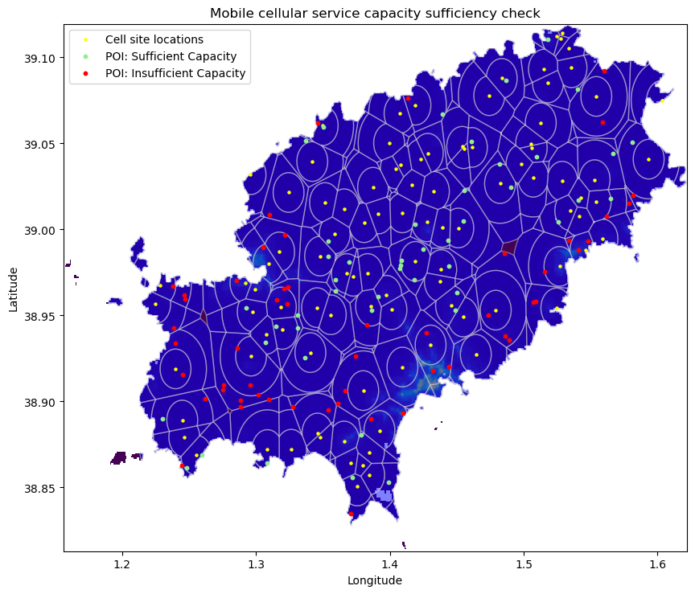
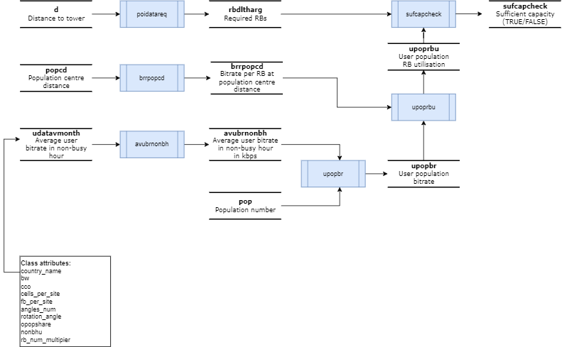

Mobile Network Capacity Model
About
The Mobile Network Capacity Model is a special tool that can figure out if the internet connection from a cell phone tower is strong enough to let places like hospitals, schools, and houses (which we call points of interest, or POIs) use the internet without any problems. This tool checks to see if there is enough bandwidth for everyone who needs it.
The example picture below is a map. It shows where the cell phone towers are, the zones around them where people can use their phones, how many people live there, and where important places like hospitals and schools are located. The tool uses the map and colours to tell us if these important places can get enough bandwidth from the towers to use the internet properly. Red means there's not enough bandwidth, and green means there is.

Repository structure
mobile-network-capacity-model
├── README.md
├── app.py
├── data
│ ├── input_data
│ │ ├── ESP-1697916284-6wv8-cellsite.csv
│ │ ├── ESP-1708423221-tgah-visibility.csv
│ │ ├── MobileBB_Traffic_per_Subscr_per_Month.csv
│ │ ├── active-mobile-broadband-subscriptions_1711147050645.csv
│ │ ├── area.gpkg
│ │ ├── bwdistance_km.csv
│ │ ├── bwdlachievbr_kbps.csv
│ │ ├── bwrsrp_dbm.csv
│ │ ├── bwulachievbr_kbps.csv
│ │ ├── mobile-broadband-internet-traffic-within-the-country_1711147118571.csv
│ │ └── population.tif
│ └── output_data
│ ├── MobileBB_Traffic_per_Subscr_per_Month.csv
│ └── network_capacity.csv
├── environment.yml
├── logs
│ └── app_timestamp.log
├── mobile_capacity
│ ├── capacity.py
│ └── spatial.py
├── notebooks
│ └── analyses.ipynb
└── tests
├── confest.py
└── unit
└── test_class.py
Summary of methods

Installation Steps
- Clone the Repository: Clone the repository to your local machine using the following command:
git clone git@ssh.dev.azure.com:v3/ITUINT/ConnectivityToolkit/mobile-network-capacity-model
- Navigate to the directory:
cd mobile-network-capacity-model
- Create a virtual environment with the required dependencies via conda:
conda install -n base conda-libmamba-solver
conda env create --file environment.yml --solver libmamba
conda activate mobilecapacityenv
-
Run analysis in notebooks
Run the analysis innotebooks/app.ipynb -
Deploy streamlit app locally
conda activate mobilecapacityenv
streamlit run app.py
Use keyborad shortcut Ctrl+C to terminate the local deployment.
Keeping analysis outputs private
To ensure that all Jupyter Notebook outputs are cleared before committing changes to the repository, we use nbstripout. By following these instructions, contributors to your project will ensure that Jupyter Notebook outputs are cleared before committing changes, helping to keep the repository clean and free of unnecessary data. Follow the steps below to install and enable nbstripout.
First, you'll need to install nbstripout. You can do this using pip:
pip install nbstripout
Once nbstripout is installed, you need to enable it for your Git repository. Run the following command in the root directory of your repository:
nbstripout --install
This will configure nbstripout to automatically strip output from Jupyter Notebooks when you commit them to your repository.
nbstripout --status